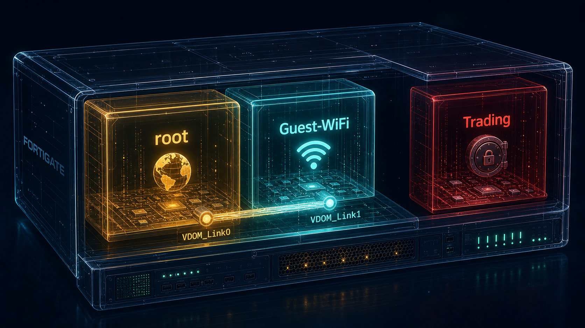

Pre-existing default route → Internet
New default route → link
No interface pointing here.

Default route (0.0.0.0/0.0.0.0) matches, egress interface chosen: VDOM_Link1.
Policy srcintf = Guest VLAN, dstintf = VDOM_Link1 → matched, session allowed.
Packet leaves Guest-WiFi's virtual world, arrives at root on the paired interface VDOM_Link0.
Pre-existing default route matches, egress interface chosen: WAN.
Policy srcintf = VDOM_Link0, dstintf = WAN → matched, NAT applied, session allowed.
Guest device gets its response. Trading VDOM was never in the path — physically incapable of being touched.
Route ✅ Policy ✅ on both VDOMs. Full six-step journey completes. Guest device reaches the internet.
Guest-WiFi has NO default route toward VDOM_Link1. Step 1 fails immediately — the routing table has nothing to match, so no egress interface is ever chosen. The packet never even reaches step 2 (policy lookup).
Guest-WiFi's route is fine — step 1 succeeds, egress interface correctly chosen as VDOM_Link1. But no policy matches srcintf=Guest VLAN / dstintf=VDOM_Link1. Step 2 fails. This looks identical to "nothing happening" from the user's side, but the failure point is completely different.
No inter-VDOM link, no route, no interface anywhere pointing toward Trading VDOM from root or Guest-WiFi. There is no step 1 to even attempt — no interface exists to route toward in the first place.